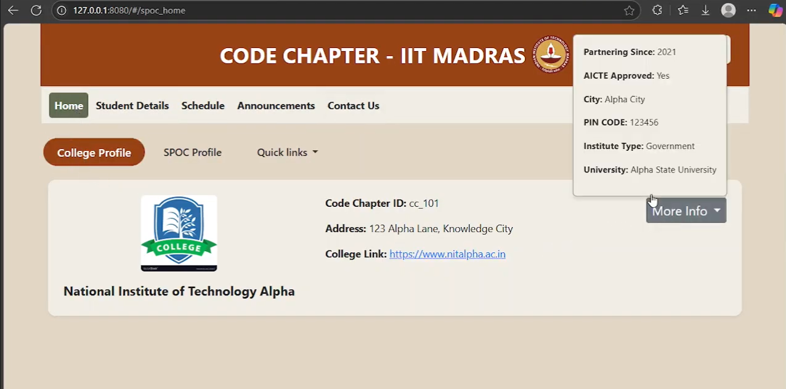
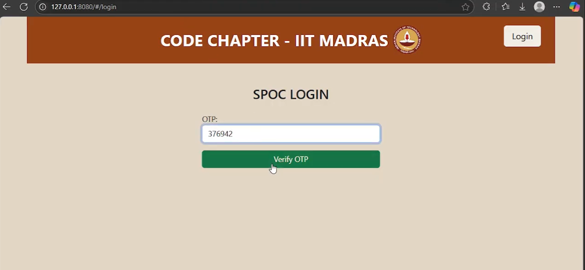
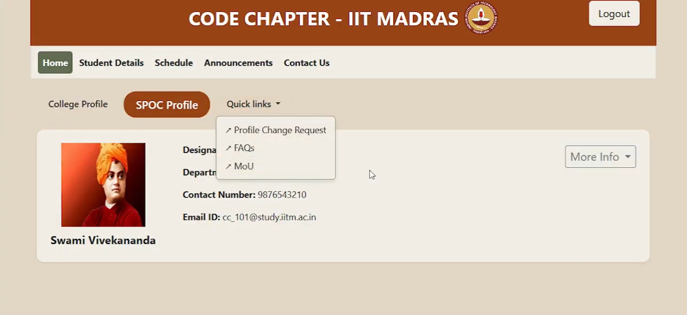
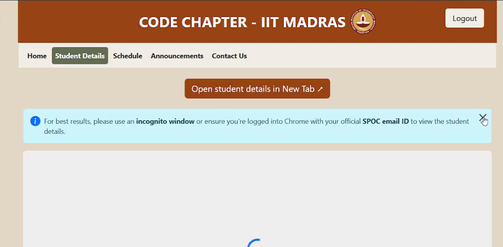

CODE Chapter SPOC Dashboard
A full-stack web application for managing CODE Chapter activities at IIT Madras, enabling SPOCs and
admins to oversee student progress, announcements, and support resources through a secure dashboard. View on GitHub
Python
Flask
SQLAlchemy
Vue.js
Bootstrap
Docker
PostgreSQL
GCP
Situation
IIT Madras' CODE Chapter SPOCs needed a centralized platform to manage student activities, monitor
progress, and communicate updates. Without a centralized system, the IITM faced fragmented data handling
and inefficient administrative processes while communicating to multiple institutions.
Task
IIT Madras has started the "CODE-Chapter" initiative, in which, various Higher Educational institutes
across the world can enroll their students to attend the advanced courses offered by IIT Madras'
faculty. SPOC here means a "Single Point of Contact" i.e a single individual which
represents an entire college.
My task was to develop a secure, user-friendly dashboard for SPOCs to access student
details, receive announcements, and manage profile changes, ensuring scalable management of CODE Chapter
operations.
Action
- Built a robust backend with Flask and SQLAlchemy: Implemented user authentication
via Flask-Security-Too, database migrations with Flask-Migrate, and email functionality with
Flask-Mail for notifications, storing data in PostgreSQL for reliability.
- Developed an interactive frontend using Vue.js and Bootstrap: Created dynamic
dashboards for viewing student courses, quiz marks, and announcements, with responsive design for
seamless access across devices.
- Ensured security and scalability: Integrated role-based access control for SPOCs
and admins, used Google Auth for secure logins, and deployed via Docker containers on GCP for
production-grade performance.
- Collaborated with stakeholders: Integrated external Google Forms for profile change
requests, demonstrating adaptability to institutional workflows and user needs.
- Implemented cloud-based logging with Google Cloud Logging: Enabled centralized
monitoring and debugging of application events, improving troubleshooting efficiency in production
deployments.
Result
-
Streamlined administrative processes: Reduced time spent on manual data retrieval
and updates by atleast50%, enabling SPOCs to focus on student engagement rather
than paperwork.
-
Enhanced oversight and communication: Provided real-time access to student progress
for 100s of students across institutions, improving decision-making accuracy and
support response times.
-
Achieved high reliability: Deployed on GCP, handling concurrent users (using
gunicorn server) securely and ensuring data integrity through automated migrations and cloud based
logging.
Screenshots & Demo
Home Page

The main landing page providing an overview of the dashboard and quick access to key features. The dashboard is intentionally made less verbose UX friendly for non-technical users.

OTP-Based Login
Secure authentication system using one-time passwords, which is sent to their mail-id.

SPOC Profile and Quick Links
Personal profile section with shortcuts to student management and announcements, and quick links for profile-change request, FAQs and downloading MOUs

Student Details Page
Detailed view of student information, courses, and their quiz performances, using an embedded iframe from Google Looker studio
Future Improvements
- Integrate machine learning for predictive student performance analysis
- Add real-time chat for SPOC-student communication
- Expand mobile app support for on-the-go access